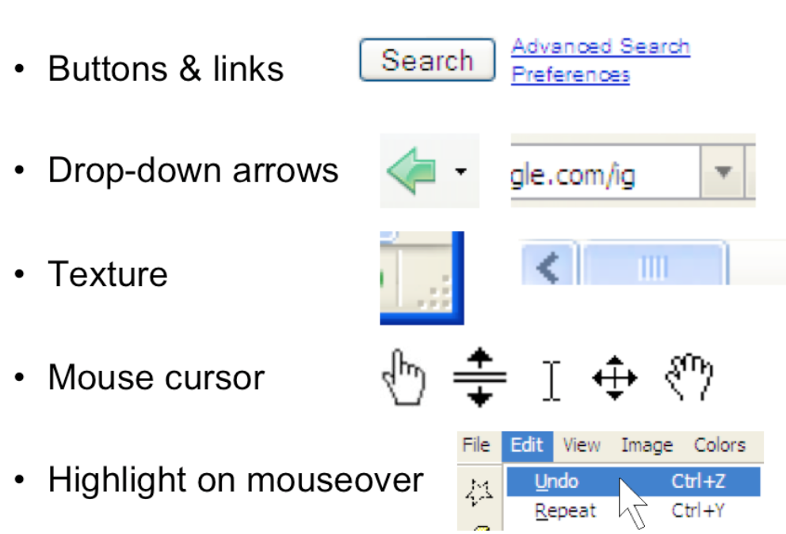
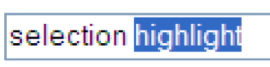
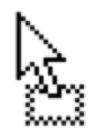

Use [Hypothesis](https://hypothes.is/) for discussion, Q&A, and additional examples or references to improve the material.
Consistency
Consistency
- Similar things should look and act the same
- Different things should look different
- also called the principle of "least surprise"
- Consistency allows the user to transfer their existing knowledge easily to a new UI
There's a general principle of learnability: **consistency**. This rule is often given the hifalutin' name the Principle of Least Surprise, which basically means that you shouldn't surprise the user with the way a command or interface object works.
Similar things should look, and act, in similar ways. Conversely, different things should be visibly different.
Kinds of Consistency
There are three kinds of consistency you need to worry about:
1. **Internal consistency** within your application
2. **External consistency** with other applications on the same platform
3. **Metaphorical consistency** with your interface metaphor or similar real-world objects
Metaphors
Metaphors are one way you can bring the real world into your interface. A well-chosen, well-executed metaphor can be quite effective and appealing, but be aware that metaphors can also mislead.
A computer interface must deviate from the metaphor at some point -- otherwise, why aren't you just using the physical object instead? At those deviation points, the metaphor may do more harm than good. For example, it's easy to say "a word processor is like a typewriter," but you shouldn't really use it like a typewriter. Pressing Enter every time the cursor gets close to the right margin, as a typewriter demands, would wreak havoc with the word processor's automatic word-wrapping.
The advantage of metaphor is that you're borrowing a conceptual model that the user already has experience with. A metaphor can convey a lot of knowledge about the interface model all at once. It's a *notebook*. It's a *CD case*. It's a *desktop*. It's a *trashcan*.
Each of these metaphors carries along with it a lot of knowledge about the parts, their purposes, and their interactions, which the user can draw on to make guesses about how the interface will work.
Some interface metaphors are famous and largely successful. The desktop metaphor -- documents, folders, and overlapping paperlike windows on a desk-like surface -- is widely used and copied. The trashcan, a place for discarding things but also for digging around and bringing them back, is another effective metaphor -- so much so that Apple defended its trashcan with a lawsuit, and imitators are forced to use a different look. (Recycle Bin, anyone?)
The basic rule for metaphors is: use it if you have one, but don't stretch for one if you don't.
Appropriate metaphors can be very hard to find, particularly with real-world objects. Metaphors can also be deceptive, leading users to infer behavior that your interface doesn't provide. Sure, it looks like a book, but can I write in the margin? Can I rip out a page?
Metaphors can also be constraining. Strict adherence to the desktop metaphor wouldn't scale, because documents would always be full-size like they are in the real world, and folders wouldn't be able to have arbitrarily deep nesting.
The biggest problem with metaphorical design is that your interface is presumably more capable than the real-world object, so at some point you have to break the metaphor. Nobody would use a word processor if really behaved like a typewriter. Features like automatic word-wrapping break the typewriter metaphor, by creating a distinction between hard carriage returns and soft returns.
#### Most of all, using a metaphor doesn't save an interface that does a bad job communicating itself to the user.
Natural Mapping: Consistency of Layout
- When possible, the physical arrangement of controls should match arrangement of function
- Best mapping is direct, but natural mappings don't have to be direct if they have an easy mental model

Another important principle of interface communication is good **mapping** of functions to controls.
Consider the spatial arrangement of a light switch panel. How does each switch correspond to the light it controls? If the switches are arranged in the same fashion as the lights themselves, it is much easier to learn which switch controls which light.
Direct mappings are not always easy to achieve, since a control may be oriented differently from the function it controls. Light switches are mounted vertically, on a wall; the lights themselves are mounted horizontally, on a ceiling. So the switch arrangement may not correspond directly to a light arrangement.
Other good examples of mapping include:
- Stove burners. Many stoves have four burners arranged in a square, and four control knobs arranged in a row. Which knobs control which burners? Most stoves don't make any attempt to provide a natural mapping.
- Car turn signals. The turn signal switch in most cars is a stalk that moves up and down, but the function it controls is a signal for left or right turn. So the mapping is not direct, but it is nevertheless natural. Why?
- An audio mixer for DJs (proposed by Max Van Kleek for the Hall of Fame) has two sets of identical controls, one for each turntable being mixed. The mixer is designed to sit in between the turntables, so that the left controls affect the turntable to the left of the mixer, and the right controls affect the turntable to the right. The mapping here is direct.
- The controls on the RealCD interface don't have a natural mapping. Why not?
- The Segway's controls have a direct mapping. Why?
- Here's a meta question about these readings. What's wrong with the mapping of this bulleted list with respect to the slide above?
Internal Consistency in Wording
Another important kind of consistency, often overlooked, is in wording. Use the same terms throughout your user interface. If your interface says "share price" in one place, "stock price" in another, and "stock quote" in a third, users will wonder whether these are three different things you're talking about.
Don't get creative when you're writing text for a user interface; keep it simple and uniform, just like all technical writing.
Here are some examples from MIT's Course VI Underground Guide website -- confusion about what's a "review" and what's an "evaluation".
External Consistency in Wording: Speak the User's Language
- Use common words, not techie jargon
- But use domain-specific terms where appropriate
- Allow aliases/synonyms in command languages

**External consistency** in wording is important too -- in other words, speak the user's language as much as possible, rather than forcing them to learn a new one. If the user speaks English, then the interface should also speak English, not Geekish. Technical jargon should be avoided. Use of jargon reflects aspects of the system model creeping up into the interface model, unnecessarily. How might a user interpret the dialog box shown here? One poor user actually read type as a verb, and dutifully typed M-I-S-M-A-T-C-H every time this dialog appeared. The user's reaction makes perfect sense when you remember that most computer users do just that, type, all day. But most programmers wouldn't even think of reading the message that way. Yet another example showing that you are not the user.
Technical jargon should only be used when it is specific to the application domain and the expected users are domain experts. An interface designed for doctors shouldn't dumb down medical terms.
When designing an interface that requires the user to type in commands or search keywords, support as many aliases or synonyms as you can. Different users rarely agree on the same name for an object or command. One study found that the probability that two users would mention the same name was only 7-18%. (Furnas et al, "[The vocabulary problem in human-system communication](http://dl.acm.org/citation.cfm?id=32212)," CACM v30 n11, Nov. 1987).
Incidentally, there seems to be a contradiction between these guidelines. Speaking the User's Language argues for synonyms and aliases, so a command language should include not only delete but erase and remove too. But consistency in wording argued for only one command name, lest the user wonder whether these are three different commands that do different things. One way around the impasse is to look at the context in which you're applying the heuristic. When the user is talking, the interface should make a maximum effort to understand the user, allowing synonyms and aliases. When the interface is speaking, it should be consistent, always using the same name to describe the same command or object. What if the interface is smart enough to adapt to the user -- should it then favor matching its output to the user's vocabulary (and possibly the user's inconsistency) rather than enforcing its own consistency? Perhaps, but adaptive interfaces are still an active area of research, and not much is known.
Answer this question: [find a metaphor](https://docs.google.com/forms/d/e/1FAIpQLSdPyOfHeQTEnAWvYPCQX3DJNQcimJ-jpZeZreMWosNe7Ph-oQ/viewform?usp=sf_link)
Affordances
Affordances
- Perceived and actual properties of a thing that determine how the thing could be used
- Perceived vs. actual
**Affordance** refers to "the perceived and actual properties of a thing", primarily the properties that determine how the thing could be operated. Chairs have properties that make them suitable for sitting; doorknobs are the right size and shape for a hand to grasp and turn. A button's properties say "push me with your finger."
Scrollbars say that they continuously scroll or pan something that you can't entirely see. Affordances are how an interface communicates *nonverbally*, telling you how to operate it.
Affordances are rarely innate -- they are learned from experience. We recognize properties suitable for sitting on the basis of our long experience with chairs. We recognize that listboxes allow you to make a selection because we've seen and used many listboxes, and that's what they do.
Note that *perceived* affordance is not the same as actual affordance. A facsimile of a chair made of papier-mâché has a perceived affordance for sitting, but it doesn't actually afford sitting: it collapses under your weight. Conversely, a fire hydrant has no perceived affordance for sitting, since it lacks a flat, human-width horizontal surface, but it actually does afford sitting, albeit uncomfortably.
Look at the door handle on the left, whose nonverbal message (perceived affordance) clearly says "pull me" but whose label says "push" (which is presumably what it actually affords). Or the textbox on the right, whose perceived affordance (type a time here) disagrees with what it can actually do (you can't type, you have to push the Set Time button to change it). The parts of a user interface should agree in perceived and actual affordances.
The original definition of affordance (from psychology) referred only to actual properties, but when it was imported into human computer interaction, perceived properties became important too. Actual ability without any perceivable ability is an undesirable situation. We wouldn't call that an affordance. Suppose you're in a room with completely blank walls. No sign of any exit -- it's missing all the usual cues for a door, like an upright rectangle at floor level, with a knob, and cracks around it, and hinges where it can pivot. Completely blank walls. But there is actually an exit, cleverly hidden so that it's seamless with the wall, and if you press at just the right spot it will pivot open. Does the room have an "affordance" for exiting? To a user interface designer, no, it doesn't, because we care about how the room communicates what should be done with it. To a psychologist (and perhaps an architect and a structural engineer), yes, it does, because the actual properties of the room allow you to exit, if you know how.
Use Appropriate Affordances

Here are some more examples of commonly-seen affordances in graphical user interfaces. Buttons and hyperlinks are the simplest form of affordance for actions. Buttons are typically metaphorical of real-world buttons, but the underlined hyperlink has become an affordance all on its own, without reference to any physical metaphor.
Downward-pointing arrows, for example, indicate that you can see more choices if you click on the arrow. The arrow actually does double-duty -- it makes visible the fact that more choices are available, and it serves as a hotspot for clicking to actually make it happen.
Texture suggests that something can be clicked and dragged -- relying on the physical metaphor, that physical switches and handles often have a ridged or bumpy surface for fingers to more easily grasp or push.
Mouse cursor changes are another kind of affordance -- a visible property of a graphical object that suggests how you operate it. When you move the mouse over a hyperlink, for example, you get a finger cursor. When you move over the corner of a window, you often get a resize cursor; when you move over a textbox, you get a text cursor (the "I-bar").
Finally, the visible highlighting that you get when you move the mouse over a menu item or a button is another kind of affordance. Because the object visibly responds to the presence of the mouse, it suggests that you can interact with it by clicking.
Evolution of Hyperlinks and Buttons

Hyperlinks and buttons have evolved and changed significantly. The top row shows how hyperlinks and buttons looked circa 1995 (on NCSA Mosaic, the first widely-used web browser, which used the Motif graphical user interface toolkit). What properties did they have that distinguished them and made them clickable? Which of those properties have been lost over time, presumably as users become more familiar with these objects? The drive toward simplicity is a constant force in aesthetics and user interface design, so affordances tend to diminish rather than increase.
The bottom row shows a hyperlink which has been simplified too far, and an HTML button that has been not only simplified but also lost its mouse cursor affordance. This goes too far.
What's Wrong With This?

The story of affordances isn't purely reductionist. Sometimes you can't boil the affordance down to a single property like its color or a 3D border. This thing here is a button; but it's so large, and has such a disproportionate relationship between the area and the label, that it loses its sense of clickability.
What Can You Do With This Page?
Here is the Campus Preview Weekend 2011 website. If the user wants an overview of all the events happening that weekend, the user may end up just clicking through the days individually, because those links (at the bottom) are the most salient affordances for interaction.
But it turns out that the graphic in the center page is actually a link to a nifty search interface that lets the user look at all the event listings in addition to other cool functionalities. Unfortunately the graphic doesn’t have strong affordances for interaction. It’s mostly a big logo, so what does a typical user do? Glance at it and then ignore it, scanning the page instead for things that look like actions, such as the clearly marked hyperlinks at the bottom. The “click here to search” text in the logo doesn’t work.
(example and explanation due to Dina Betser)
Answer this question: [find affordances](https://docs.google.com/forms/d/e/1FAIpQLScJJXKqKhe89UzI-Fr3cEmC1lvw1tBcvQs46reJ8XI5c10iUw/viewform?usp=sf_link)
Feedback
Actions Should Have Immediately Visible Effects
- Low-level feedback

- High-level feedback
- model state changes
- new web page starts loading
Hand-in-hand with affordances is **feedback**: how the system changes visibly when you perform an action.
When the user invokes a part of the interface, it should appear to respond. Push buttons should depress and release. Scrollbar thumbs and dragged objects should move with the mouse cursor. Pressing a key should make a character appear in a textbox.
Low-level feedback is provided by a view object itself, like push-button feedback. This kind of feedback shows that the interface at least took notice of the user's input, and is responding to it. (It also distinguishes between disabled widgets, which don't respond at all.)
High-level feedback is the actual result of the user's action, like changing the state of the model.
Visible Navigation State

Let's turn now to visualizing the state of the system.
**Navigation** is one important kind of state to visualize -- i.e., where am I now? On the Web, in particular, users are in danger of getting lost as they move around in deep, information-rich sites. We've already seen in previous readings a couple of patterns for preventing this by visualizing the user's location. Breadcrumb trails show where you are as a path through the site's hierarchy (e.g., Travel > Guides > North America), in a very compact form. Showing the hierarchy in a tree widget with the current node highlighted is another way to do it, but costs more screen space and complexity. Pagination and highlighted tabs are similar patterns that show the user where they are, along with some context of where else they could go.
Visible Model State
- Continuous visual representation of model
- What to visualize should be guided by the user's tasks

It hardly seems necessary to say that the system **model** should be visualized in an interface. That's one of the essential properties of a direct-manipulation interface: a continuous visual representation of the state of the application.
The hard design issues in model visibility tend to lie in what to make visible (i.e., which aspects of the model), and how to display it (i.e., in what representation). We'll discuss the how, the visual representation, in much greater detail in a future reading on graphic design.
The what may involve a tension between visibility and simplicity; visibility argues for showing more, but simplicity argues for showing less. Understanding the users and their tasks (a technique called task analysis which we'll discuss in a future class) helps resolve the tension. For example, Microsoft Word displays a word count continuously in the status bar, since counting words is an important subtask for many users of Word (such as students, journalists, and book authors). Making it always visible saves the need to invoke a word-count command.
Visible View State

- Drag & drop mouse cursor
 dragging
 can’t drop
can’t drop
- Keyboard focus
The "view state" is the current state of the user's interaction with the interface.
Selections are particularly important. When the user selects an object to operate on, highlight the object somehow. Don't just leave the selection invisible and implicit. Selection highlighting provides important feedback that the selection operation was successful; it also shows the current state of the selection if the user has forgotten what was previously selected.
A common technique for showing a selection highlight in text is [reverse video](https://en.wikipedia.org/wiki/Reverse_video) (white text on dark colored background). For shapes and objects, the selection highlight may be done by **selection handles**, or by a dotted or animated border around the object ("crawling ants"). Selection handles are appealing because they do double-duty -- both indicating the selection, and providing visible affordances for resizing the object.
When the user selects objects or text and then operates on the selection with a command, **keep it selected**, especially if it changes appearance drastically or moves somewhere else. If the selected thing is offscreen when the user finally invokes a command on it, scroll it back into view. That allows the user to follow what happened to the object, so they can easily evaluate its final state. Similarly, if the user makes a selection and then invokes an unrelated command (like scrolling or sorting or filtering, none of which actually use the selection), **preserve the selection**, even if it means you have to remember it and regenerate it. User selections, like user data, are precious, and contribute to the visibility of what the system is doing.
Another form of view state is the state of an input controller, like a drag & drop operation. Drag & drop is often indicated by a cursor change.
Useless Feedback vs. Useful Feedback
Feedback is important, but don't overdo it. This dialog box demands a click from the user. Why? Does the interface need a pat on the back for finishing the conversion? It would be better to just skip on and show the resulting documentation.
Information Scent
- Information foraging theory
- Humans gathering information can be modeled like animals gathering food
- Constantly evaluating and making decisions to maximize information collected against cost of obtaining it
- Information scent
- Cues on a link that indicate how profitable it will be to follow the link to its destination
Users depend on visible cues to figure out how to achieve their goals with the least effort. For information gathering tasks, like searching for information on the web, it turns out that this behavior can be modeled much like animals foraging for food. An animal feeding in a natural environment asks questions like: Where should I feed? What should I try to eat (the big rabbit that's hard to catch, or the little rabbit that's less filling)? Has this location been exhausted of food that's easy to obtain, and should I try to move on to a more profitable location? **Information foraging theory** claims that we ask similar questions when we're collecting information: Where should I search? Which articles or paragraphs are worth reading? Have I exhausted this source, should I move on to the next search result or a different search? (Pirolli & Card, "[Information Foraging in Information Access Environments](http://dl.acm.org/citation.cfm?id=223911)," *CHI '95*.)
An important part of information foraging is the decision about whether a hyperlink is worth following -- i.e., does this smell good enough to eat? Users make this decision with relatively little information -- sometimes only the words in the hyperlink itself, sometimes with some context around it (e.g., a Google search result also includes a snippet of text from the page, the site's domain name, the length of the page, etc.) These cues are **information scent** -- the visible properties of a link that indicate how profitable it will be to follow the link. (Chi et al, "[Using Information Scent to Model User Information Needs and Actions on the Web](http://dl.acm.org/citation.cfm?id=365325)", *CHI 2001*.)
Give Good Information Scent
- A link should smell like the content it leads to

Hyperlinks in your interface -- or in general, any kind of feature, including menu commands and toolbar buttons -- should provide good, appropriate information scent.
Examples of bad scent include misleading terms, incomprehensible jargon (like "Set Program Access and Defaults" on the Windows XP Start menu), too-general labels ("Tools"), and overlapping categories ("Customize" and "Options" found in old versions of Microsoft Word).
Examples of good scent can be seen in the (XP-style) Windows Control Panel on the left, which was carefully designed. Look, for example, at "Printers and Other Hardware." Why do you think printers were singled out?
Presumably because task analysis (and collected data) indicated that printer configuration was a very common reason for visiting the Control Panel. Including it in the label improves the scent of that link for users looking for printers. (Look also at the icon -- what does that add to the scent of Printers & Other Hardware?)
Date, Time, Language, and Regional Options is another example. It might be tempting to find a single word to describe this category -- say, Localization -- but its scent for a user trying to reset the time would be much worse.
Notice that the quality of information scent depends on the user's particular goal. A design with good scent for one set of goals might fail for another set. For example, if a shopping site has categories for Music and Movies, then where would you look for a movie soundtrack? One solution to this is to put it in both categories, or to provide "See Also" links in each category that direct the user sideways in the hierarchy.
Good & Bad Information Scent
Here are some examples from the web. Poor information scent is on the left; much better is on the right.
The first example shows an unfortunately common pathology in web design: the "click here" link. Hyperlinks tend to be highly visible, highly salient, easy to pick out at a glance from the web page -- so they should convey specific scent about the action that the link will perform. "Click here" says nothing. Your users won't read the page, they'll scan it.
Notice that the quality of information scent depends on the user's particular goal. A design with good scent for one set of goals might fail for another set. For example, if a shopping site has categories for Music and Movies, then where would you look for a movie soundtrack? One solution to this is to put it in both categories, or to provide "See Also" links in each category that direct the user sideways in the hierarchy.
Hierarchy of Exploration Costs
- Glance
- affordances, icons, short salient words
- Read
- Hover or press
- cursor change, highlight, tooltip, submenu, preview
- Click through
- target page, dialog box, or mode
- Invoke
- feedback effect on the model state
For the user, collecting information scent cues is done progressively, with steadily increasing cost.
Some properties can be observed very quickly, with a glance over the interface: detecting affordances (like buttons or hyperlinks, if they're well designed), recognizing icons (like a magnifying glass), or short and very visible words (like Search in big bold text).
With more effort, the user can read: long labels, help text, or search result snippets. Reading is clearly more expensive than glancing, because it requires focusing and thinking.
Still more time and effort is required to hover the mouse or press down, because your hands have to move, not just your eyes. We inspect menubars and tooltips this way. Note that tooltips are even more costly, because you often have to wait a time for the tooltip to appear.
Clicking through a link or bringing up a dialog box is next, and actually invoking a command to see its effect is the costliest way to explore.
Exploration is important to learning. But much of this reading has been about techniques for reducing the costs of exploration, and making the right feature more obvious right away. An interface with very poor affordances will be very expensive to explore. Imagine a webpage whose links aren't distinguished by underlining or color -- you've just taken away the Glance, and forced the user to Read or Hover to discover what's likely to be clickable. Now imagine it in a foreign language -- you've just taken away Read. Now get rid of the mouse cursor feedback -- no more Hover, and the user is forced to Click all over the place to explore. Your job as a designer is to make the user's goal as easy to recognize in your user interface as possible.
Lots of scent but hard to scan

Here's an example of going overboard with information scent. There is so much text in the main links of this page (Search listings..., Advertise..., See..., Browse...) that it interferes with your ability to Glance over the page. A better approach would be to make the links themselves short and simple, and use the smaller text below each link to provide supporting scent.
Answer this question: [improving learnability](https://docs.google.com/forms/d/e/1FAIpQLSebFu1izu6VLBug_7ilzv046FS0f5LZUlQai4pQLdBYSXVYMA/viewform?usp=sf_link)